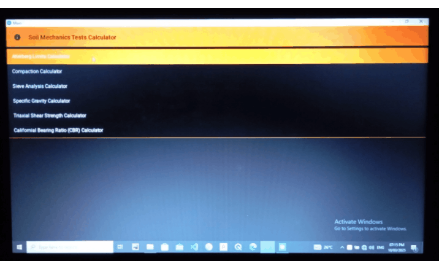
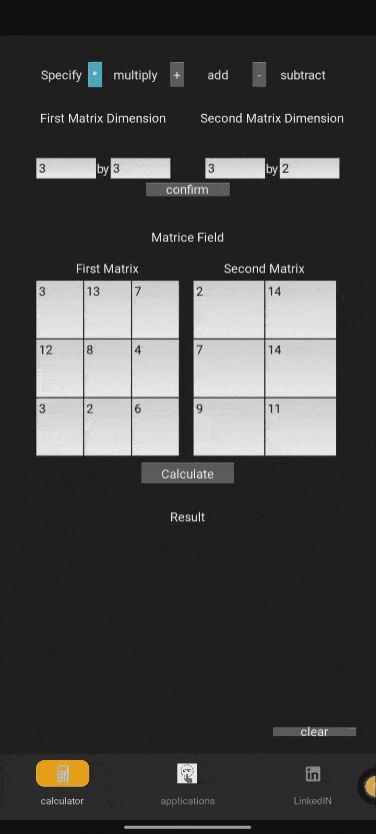

Emmanuel Aisosa Aimufia
Structural Engineer | Python Developer | Creative Technologist
👋 Welcome!
This is my personal portfolio showcasing select Python and engineering projects I've developed. Explore each project below with images, GIF demonstrations, and links to detailed breakdowns.
🔧 Projects Overview
🏗️ Soil Mechanics Software
📅 Started: February 2025
Performs key geotechnical calculations, renders plots, and exports results to Word.
More Details🧮 Matrix Calculator (KivyMD)
📅 Started: February 2025
Mimics textbook-style matrix layout with intuitive UI for addition, multiplication, and inversion.
More Details🔐 Encryption & Decryption Tool
📅 Started: February 2025

A simple KivyMD app to encrypt/decrypt text with a neat interface.
More Details🧮 Basic Calculator
📅 Started: February 2025

Performs basic arithmetic functions in a clean UI.
More Details🎲 Tic-Tac-Toe Game
📅 Started: February 2025

A simple interactive Python-based game with basic AI logic.
More Details📝 Exam Question Shuffler & Marker
📅 Started: February 2025

Auto-generates multiple versions of shuffled exam questions with correct marking guides.
More Details🎬 Cinema-Themed Movie App
📅 Started: February 2025

A client-side web app that simulates a cinema environment for watching movies and YouTube videos.
More Details🌐 API + Web Integration
What I'm exploring: Adding online functionality to my KivyMD apps using Django REST framework and frontend tools.
Why: To sync results, enable cross-device use, and bring cloud power to local tools.
Tech in Use: Python, Django, REST APIs, HTML, CSS, JavaScript
- Remote question bank sync for Shuffler
- Online matrix calculation history
- Auth and result export over the web
📊 Light Data Analysis Experience
Beyond app development, I’ve also worked with Python’s Pandas, NumPy, and Matplotlib libraries for basic data analysis. Projects included student grading analysis, performance charting, and structured reporting. These experiences helped sharpen my logical reasoning and ability to visualize data insights.
🛠 Upcoming Projects
Structural Engineering Tools:
- Beam and slab design
- Structural load analysis
- Reinforcement detailing
Targeted for use by engineers and students seeking quick desktop tools for routine checks.
Stay tuned!
🧠 Creative Skills
- Drawing & Art (concept sketching, shading)
- Dancing and performance arts
- Visual storytelling through UI and design
🎓 Education
University of Benin, Benin City
Bachelor’s Degree in Structural Engineering - 2025